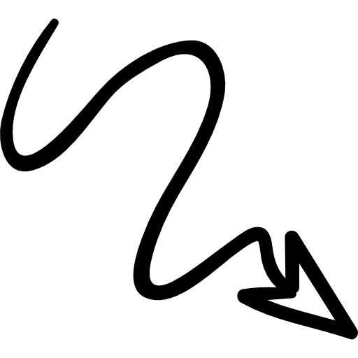

Confidence & STEM
Why don't women persist in STEM?
A lack of confidence is a major reason that women don't stay in STEM-- or choose not to pursue it in the first place. A study conducted by Stanford University researchers showed correlation between a woman's self-confidence and her ability to find a lucrative job in STEM. This lack of confidence caused women to earn up to 13% less than men in the same position, and with the same skills and experience.7
Click the icons below for more. 